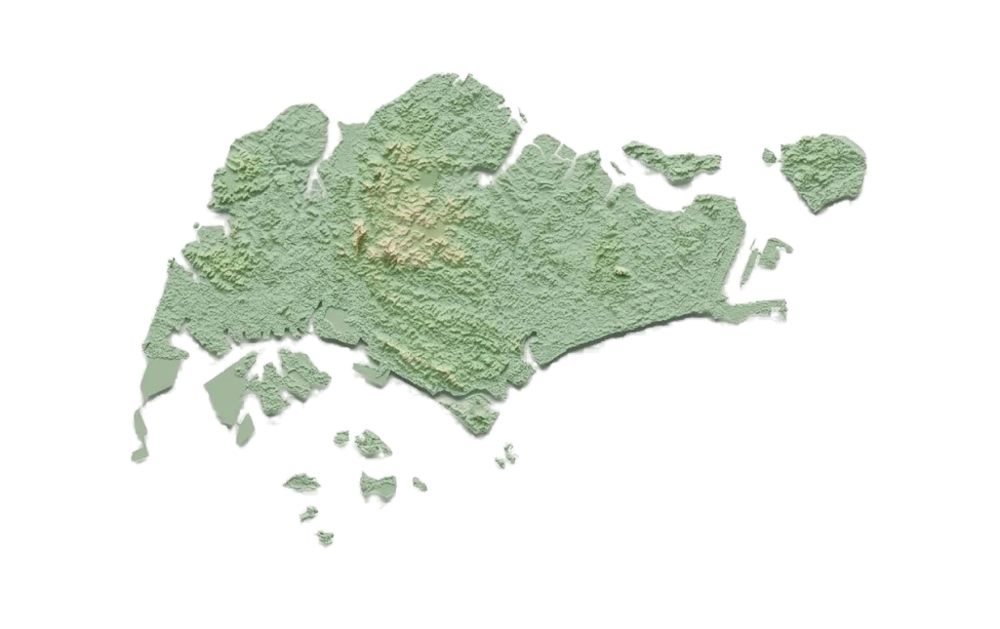

Singapore right now
Moderate
AQI
75
Moderate
PM2.5
24
µg/m³ · hourly
PSI 24-hour
52
Moderate
Temperature
31°C
Right now
Feels like
37°C
+6° warmer
Island view
AQI, PM2.5 (µg/m³) and 24-hour PSI by region. Colours show AQI.
- Good
- Moderate
- Sensitive groups
- Very unhealthy
- Hazardous

North
– AQI
– PM2.5
– PSI
East
– AQI
– PM2.5
– PSI
West
– AQI
– PM2.5
– PSI
South
– AQI
– PM2.5
– PSI
Central
– AQI
– PM2.5
– PSI
Data from data.gov.sg (NEA): hourly PM2.5, 24-hour PSI, and temperature, humidity and wind from weather stations across the island. Feels like is calculated from these, not published by NEA.